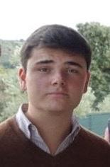

Sobre mí

Quién soy
Soy Miguel Diosdado Fontadez, estudiante de Desarrollo de Aplicaciones Web en iLERNA. Tengo experiencia en atención al cliente, hostelería y organización de eventos, así que estoy acostumbrado al trato directo con el público, al trabajo en equipo y a resolver imprevistos.
Ahora combino esa experiencia con la programación: trabajo con HTML, CSS, JavaScript, Java y SQL, y me interesan el diseño web y la experiencia de usuario.
Experiencia destacada
- Responsable de equipo de camareros en la Sala Presidencial del Congreso ONU (Cobos Catering, junio de 2025).
- Azafato de eventos y logística en Eventur Comunicación (agosto y septiembre de 2025): control de accesos y guía de asistentes.
- Camarero en Alda y Terry Catering (septiembre de 2022 - mayo de 2026).
Mi objetivo
Busco aportar organización y compromiso en tareas logísticas, de atención al público y de desarrollo web, con un enfoque en la resolución de problemas y el aprendizaje continuo.